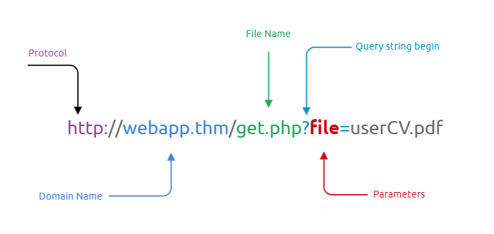

Inclusion de Archivos
En algunos casos, las aplicaciones web se desarrollan para solicitar acceso a archivos en un sistema determinado, incluyendo imágenes, texto estático, etc., mediante parámetros. Los parámetros son cadenas de parámetros de consulta adjuntas a la URL que pueden usarse para recuperar datos o realizar acciones según la entrada del usuario. El siguiente diagrama desglosa las partes esenciales de una URL.

Las vulnerabilidades de inclusión de archivos se encuentran y explotan comúnmente en diversos lenguajes de programación para aplicaciones web, como PHP , que están mal escritas e implementadas. El principal problema de estas vulnerabilidades reside en la validación de entrada, donde las entradas del usuario no se depuran ni validan, y el usuario las controla. Cuando la entrada no se valida, el usuario puede pasar cualquier entrada a la función, lo que provoca la vulnerabilidad.
Por defecto, un atacante puede aprovechar las vulnerabilidades de inclusión de archivos para filtrar datos, como código, credenciales u otros archivos importantes relacionados con la aplicación web o el sistema operativo. Además, si el atacante puede escribir archivos en el servidor por cualquier otro medio, la inclusión de archivos podría utilizarse simultáneamente para obtener la ejecución remota de comandos ( RCE ).